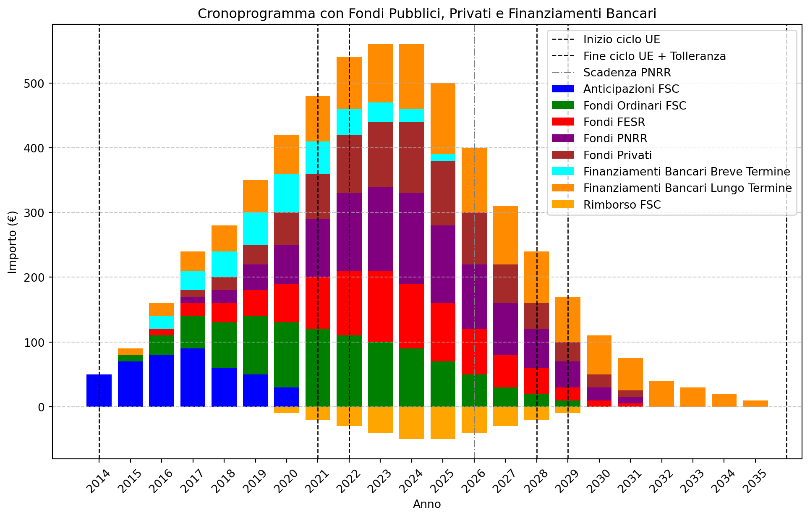

import pandas as pd
import matplotlib.pyplot as plt
# Definizione degli anni (2014-2036 con tolleranza N+2)
anni = list(range(2014, 2036))
# Distribuzione dei fondi (importi fittizi in milioni di euro)
anticipazioni_fsc = [50, 70, 80, 90, 60, 50, 30, 0, 0, 0, 0, 0, 0, 0, 0, 0, 0, 0, 0, 0, 0, 0]
fondi_fsc = [0, 10, 30, 50, 70, 90, 100, 120, 110, 100, 90, 70, 50, 30, 20, 10, 0, 0, 0, 0, 0, 0]
fondi_fesr = [0, 0, 10, 20, 30, 40, 60, 80, 100, 110, 100, 90, 70, 50, 40, 20, 10, 5, 0, 0, 0, 0]
fondi_pnrr = [0, 0, 0, 10, 20, 40, 60, 90, 120, 130, 140, 120, 100, 80, 60, 40, 20, 10, 0, 0, 0, 0]
rimborso_fsc = [0, 0, 0, 0, 0, 0, -10, -20, -30, -40, -50, -50, -40, -30, -20, -10, 0, 0, 0, 0, 0, 0]
fondi_privati = [0, 0, 0, 10, 20, 30, 50, 70, 90, 100, 110, 100, 80, 60, 40, 30, 20, 10, 0, 0, 0, 0]
finanziamenti_brevi = [0, 0, 20, 30, 40, 50, 60, 50, 40, 30, 20, 10, 0, 0, 0, 0, 0, 0, 0, 0, 0, 0]
finanziamenti_lunghi = [0, 10, 20, 30, 40, 50, 60, 70, 80, 90, 100, 110, 100, 90, 80, 70, 60, 50, 40, 30, 20, 10]
# Creazione del DataFrame
cronoprogramma = pd.DataFrame({
'Anno': anni,
'Anticipazioni FSC': anticipazioni_fsc,
'Fondi Ordinari FSC': fondi_fsc,
'Fondi FESR': fondi_fesr,
'Fondi PNRR': fondi_pnrr,
'Rimborso Anticipazioni FSC': rimborso_fsc,
'Fondi Privati': fondi_privati,
'Finanziamenti Bancari Breve Termine': finanziamenti_brevi,
'Finanziamenti Bancari Lungo Termine': finanziamenti_lunghi
})
# **📌 Salva il cronoprogramma in un file CSV**
cronoprogramma.to_csv("cronoprogramma_finanziamenti.csv", index=False)
print("Tabella salvata come 'cronoprogramma_finanziamenti.csv'")
# **📌 Creazione del grafico a barre sovrapposte**
plt.figure(figsize=(12, 7))
# Aggiunta delle barre per i vari fondi
plt.bar(cronoprogramma['Anno'], cronoprogramma['Anticipazioni FSC'], label='Anticipazioni FSC', color='blue')
plt.bar(cronoprogramma['Anno'], cronoprogramma['Fondi Ordinari FSC'], bottom=cronoprogramma['Anticipazioni FSC'], label='Fondi Ordinari FSC', color='green')
plt.bar(cronoprogramma['Anno'], cronoprogramma['Fondi FESR'], bottom=cronoprogramma['Anticipazioni FSC'] + cronoprogramma['Fondi Ordinari FSC'], label='Fondi FESR', color='red')
plt.bar(cronoprogramma['Anno'], cronoprogramma['Fondi PNRR'], bottom=cronoprogramma['Anticipazioni FSC'] + cronoprogramma['Fondi Ordinari FSC'] + cronoprogramma['Fondi FESR'], label='Fondi PNRR', color='purple')
plt.bar(cronoprogramma['Anno'], cronoprogramma['Fondi Privati'], bottom=cronoprogramma[['Anticipazioni FSC', 'Fondi Ordinari FSC', 'Fondi FESR', 'Fondi PNRR']].sum(axis=1), label='Fondi Privati', color='brown')
plt.bar(cronoprogramma['Anno'], cronoprogramma['Finanziamenti Bancari Breve Termine'], bottom=cronoprogramma[['Anticipazioni FSC', 'Fondi Ordinari FSC', 'Fondi FESR', 'Fondi PNRR', 'Fondi Privati']].sum(axis=1), label='Finanziamenti Bancari Breve Termine', color='cyan')
plt.bar(cronoprogramma['Anno'], cronoprogramma['Finanziamenti Bancari Lungo Termine'], bottom=cronoprogramma[['Anticipazioni FSC', 'Fondi Ordinari FSC', 'Fondi FESR', 'Fondi PNRR', 'Fondi Privati', 'Finanziamenti Bancari Breve Termine']].sum(axis=1), label='Finanziamenti Bancari Lungo Termine', color='darkorange')
# Aggiunta dei rimborsi FSC come barre negative
plt.bar(cronoprogramma['Anno'], cronoprogramma['Rimborso Anticipazioni FSC'], label='Rimborso FSC', color='orange')
# **📌 Aggiunta delle linee verticali per i cicli di programmazione con tolleranza (N+2)**
cicli_ue = [(2014, 2022), (2021, 2029), (2028, 2036)]
for start, end in cicli_ue:
plt.axvline(x=start, color='black', linestyle='--', linewidth=1, label='Inizio ciclo UE' if start == 2014 else None)
plt.axvline(x=end, color='black', linestyle='--', linewidth=1, label='Fine ciclo UE + Tolleranza' if end == 2022 else None)
# Aggiunta della scadenza del PNRR (2026, senza tolleranza)
plt.axvline(x=2026, color='grey', linestyle='-.', linewidth=1, label='Scadenza PNRR')
# Impostazione degli assi e della legenda
plt.xticks(cronoprogramma['Anno'], rotation=45)
plt.xlabel('Anno')
plt.ylabel('Importo (€)')
plt.title('Cronoprogramma con Fondi Pubblici, Privati e Finanziamenti Bancari')
plt.legend()
plt.grid(axis='y', linestyle='--', alpha=0.7)
# **📌 Mostra il grafico**
plt.show()Tabella salvata come 'cronoprogramma_finanziamenti.csv'